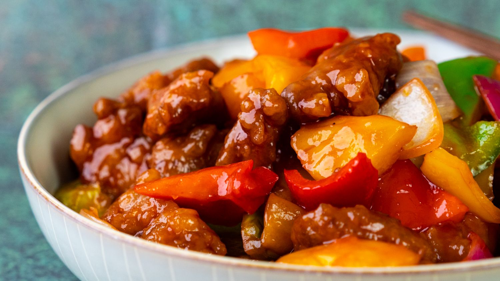

Sweet and Sour Pork

Sweet and sour pork is a dish with long history. The dish has origins in the Cantonese cuisine of the 18th century, and it is still an extremely popular dish in the area. In the early 20th century, sweet and sour pork spread to the United States via Chinese immigrants who worked on the railroads.
Ingredients
Use these easily available ingredients to make this historical classic dish:
- oil
- diced pork
- salt and pepper
- cornstarch
- diced red bell pepper
- diced green bell pepper
- diced onion
- pineapple chunks
- sugar
- ketchup
- white vinegar
- soy sauce
- garlic salt
Directions
- In a large skillet add the oil about one inch high in the pan and heat to 350 degrees.
- Sprinkle salt and pepper on the pork and toss in the cornstarch to coat completely.
- Add the pork to the oil and cook until golden and crispy about 3-4 minutes. Remove and set aside on a plate.
- In a large skillet add the olive oil, bell pepper and onion and sauté until tender.
- In a small bowl whisk the sugar, ketchup, vinegar, soy sauce, salt and cornstarch to make the sauce.
- Add the pork and pineapple back to the skillet with the peppers and pour the sauce on top. Let simmer until heated through.
- (optional)Garnish the dish with sesame seeds and green onions.
Checkout More Recipes below: